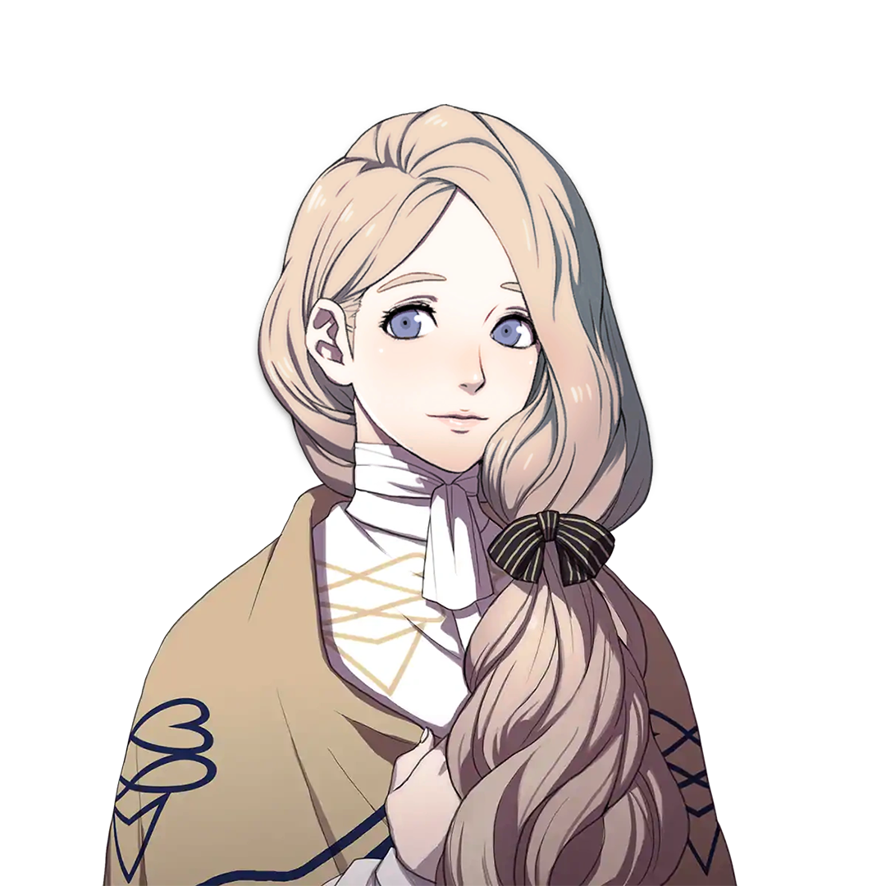
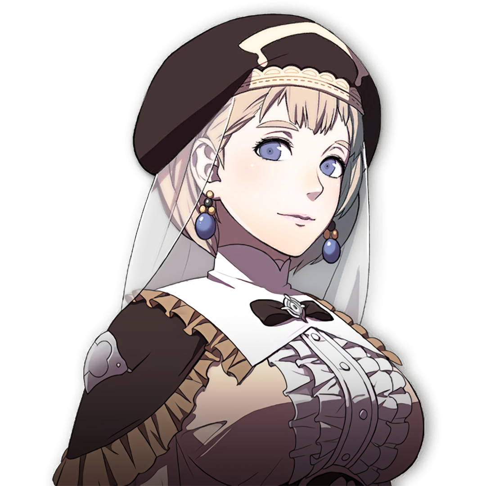

Mercedes


Gender: F
Age: 22
Crest: Minor Crest of Crest of Lamine
Height (cm): 169
Nationality: Adrestian Empire
Birthday: 5/27 - Harpstring Moon
Interests: Praying, Baking
Likes: Sweets, needlework, ghost stories, adorable things, painting, reading, fragrant flowers
Dislikes: Spicy foods, exercise
Status: Adopted daughter of a merchant from Fhirdiad